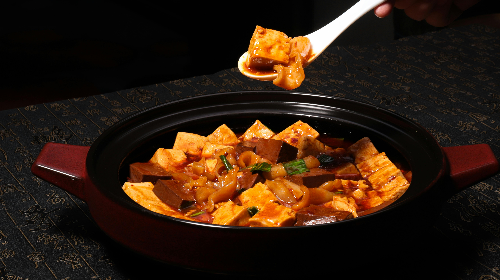
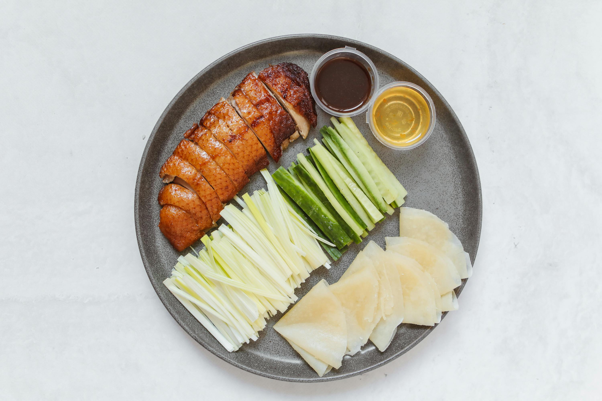

Food of China
Chinese food isn't just "one thing." It's a whole universe of flavors — and we're breaking it down by four taste sensations: spicy, salty, sweet, and sour. Your mouth is about to travel.




Flavor Regions of China
China's eight great cuisines each have a personality:
- Szechuan (Sichuan): Spicy + numbing (see Mapo Tofu above)
- Cantonese (Guangdong): Mild, fresh, slightly sweet
- Hunan: Pure spicy (no numbing — just heat!)
- Jiangsu: Salty + sweet, often braised
- Zhejiang: Fresh, soft, with a vinegar sourness
What we ate above? A delicious road trip across Szechuan, Beijing, Northern streets, and beyond.
Full yet? Meet China's wildlife → | Or go back to seasonal attractions →